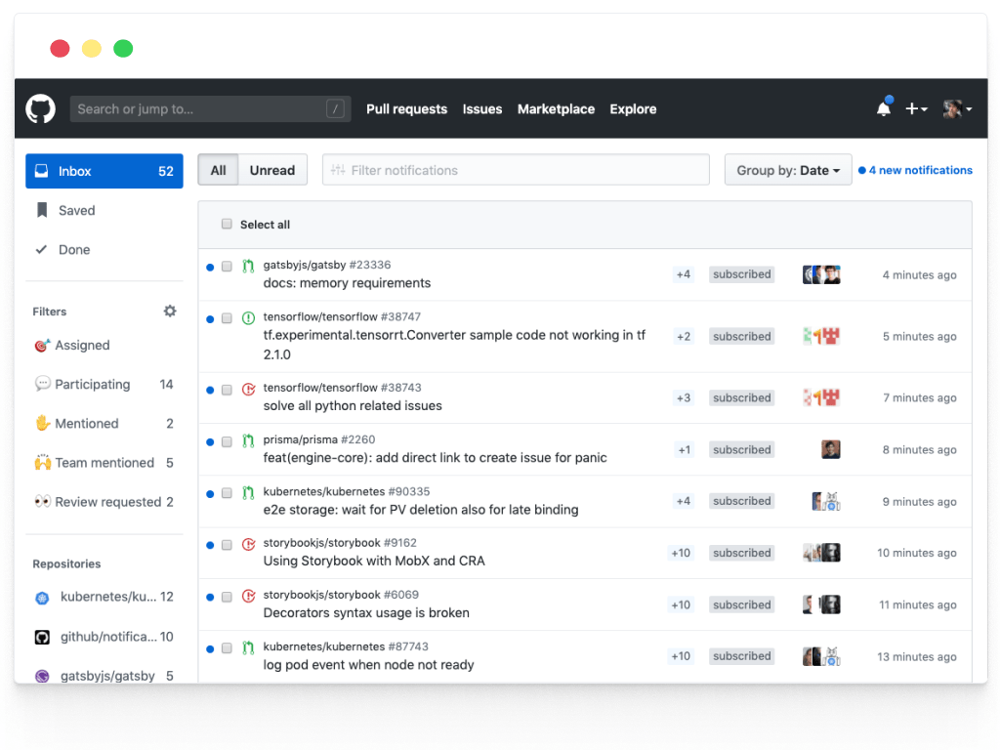

Yazılım Gündemi - 2020/16
20-26 Nisan 2020
İçindekiler
- 1. 1 Milyon Yazılımcı Projesi duyuruldu
- 2. Tek satırlık kütüphane tüm JavaScript ekosistemini kırdı
- 3. Hollanda, kamu hizmetlerinin yazılımlarının açık kaynak olmasını teşvik etmeye başlayacak
- 4. GitHub'ın yeni bildirim sayfası tasarımı Beta'dan çıktı
- 5. GitLab 12.10 sürümü yayınlandı
- 6. NodeJS 14.0 sürümü yayınlandı
- 7. Python 2 için son güncelleme: 2.7.18
- 8. Yaklaşan Online Etkinlikler #EvdeKal
- 9. Diğer Haberler
- 10. Lisans
< Önceki Gündem | 20-26 Nisan 2020 | Sonraki Gündem >
1 1 Milyon Yazılımcı Projesi duyuruldu
Geçtiğimiz haftanın yazılım gündemi yazısında (bkz: Yazılım Gündemi - 2020/15) Sanayi ve Teknoloji Bakanı Mustafa Varank'ın Açık Seminer etkinliğinin ilk gününde yaptığı bazı açıklamalara yer vermiştim. Bu hafta da sırasıyla Cumhurbaşkanı ve Hazine ve Maliye Bakanı da alanımızla ilgili bir proje duyurdular ve bazı söylemlerle bulundular. Proje ilk "3 yılda 1 milyon yazılımcı" gibi sloganlarla duyuruldu fakat sonrasında "1 Milyon İstihdam Projesi" olarak güncellendi.
Proje kapsamında 'yazılımcı' olmak isteyen adaylar bu adres üzerinden kayıt yaptırdıktan sonra BTKAkademi'nin web sitesinin "Eğitim Kataloğu" sayfasında yer alan eğitimleri, uzaktan eğitim yoluyla takip edebilecekler. Bitirdikleri her eğitim, "1 Milyon İstihdam Projesi" kapsamında oluşturulacak öz geçmişlerine (CV) yetenek olarak otomatik şekilde eklenecek. Firmalar ve kurumlar ise bu öz geçmiş havuzundaki kişilerden seçip işe alım yapabilecekler.
Konu hakkında yorumlarımı TeknoSeyir Sosyal'de birkaç gönderi belirtsem de eleştirilerimin politik bir yanı da olduğu için pek fazla detay vermedim. Bu yazıda da politikadan uzak durmaya çalışarak neden bu projenin karşısında olduğumu açıklamaya çalışacağım.
Açıkcası ben, bu projenin amacı eğitim sistemimizdeki ve sektördeki sorunları halının altına süpürüp, insanların odaklarını farklı ve alakasız bir noktaya çekmek olduğunu düşünüyorum. Çünkü sektörümüzdeki ve eğitim sistemimizdeki asıl sorun nicelik, yani yazılımcı sayısı değil; niteliktir! Sorun yazılımcı sayısı olmadığı için de bilmem kaç yılda bilmem kaç tane yazılımcı yetiştirerek bu sorunu çözemezsiniz, aksine yeni sorunlar ortaya çıkardığınız gibi mesleğimizin itibarını da zedelemiş olursunuz.
Asıl konuşmamız gereken meslek alanımızdaki üniversite bölümlerinin kalitesidir. Bu bölümlerden her yıl binlerce öğrenci mezun olmasına rağmen neden sektördeki kalifiye mühendis/yazılımcı ihtiyacı karşılanamıyor? Sorulması ve üzerine kafa yorulup, projeler yapılması gereken konu budur. Her ne kadar artık ülkedeki bu tarz şeylere şaşırmıyor olsam da kendi alanımla ilgili bu tarz şeyler görünce sinirlenmeden edemiyorum.
Yazının tamamını bu konuya ayırmak istemiyorum o yüzden sizleri Bilgisayar Mühendisleri Odası'nın bugün yayınladığı bildiriyi okumaya davet ediyorum. Bildiride yazılan her şeye ben de sonuna kadar katılıyorum ve destekliyorum.
Bu konu hakkında siz ne düşünüyorsunuz? Yorumlar bölümünde konuşalım.
2 Tek satırlık kütüphane tüm JavaScript ekosistemini kırdı
function isPromise(obj) { return !!obj && (typeof obj === 'object' || typeof obj === 'function') && typeof obj.then === 'function'; }
Yukarıdaki tek satırlık fonksiyon aslında is-promise isimli bir JavaScript kütüphanesi. Yaptığı tek işlem ise verdiğiniz değişkenin "Promise" objesi olup olmadığını kontrol etmek ve geriye boolean değer döndürmek. Yaptığı iş bu kadar basit olmasına rağmen kütüphane(!) olabilmiş, hatta yetmemiş 3.4 milyon farklı projede kullanılmış, hatta ve hatta komple bir ekosistemi birkaç saatliğine kırabilmiş. İşte size modern yazılım geliştirme süreçlerindeki bağımlılık yönetiminin geldiği halin özeti.
Bu kütüphaneye 25 Nisan günü yapılan bir değişiklik ve 2.2.0 sürümüyle birlikte ES Module desteği gelmişti fakat sanırım bu standardı iyi bir şekilde projeye eklememiş olacaklar ki sürümün yayınlanmasından sadece birkaç saat sonra bu kütüphaneyi kullanan projelerin geliştiricileri hatalar almaya başladılar. Kütüphanenin yeni sürümündeki hatanın etki alanı oldukça büyük: Facebook'un "Create React App" aracından, Google'ın AngularJS framework'üne, oradan Amazon'un AWS Serverless komut satırı aracına kadar birçok yerden sarsıntılar hissedildi. Hali hazırda çalışan uygulamalarda anlık bir soruna yol açmadı fakat geliştiriciler derleme sırasında hata aldıkları için projelerin geliştirilme süreci aksamış oldu.
Neyse ki sorunun çözülmesi fazla uzun sürmedi. Birkaç saat içerisinde önceki değişiklikleri geri alan ve sorunu çözen 2.2.2 sürümü yayınlandı.
Aslında JavaScript ekosistemi için bu olay hiç de yeni bir şey değil. Takip edenler mutlaka hatırlayacaktır. 2016 yılında da left-pad isimli bir kütüphanenin npm'den silinmesi üzerine aynı şeyler yaşanmıştı. Üstelik ilgili kütüphanenin geliştiricisi Türkiye'den bir isimdi: Azer Koçulu. Konuyla ilgili kendisinin konuk olduğu şöyle bir podcast yayını var. Mutlaka dinlemenizi tavsiye ederim.
Görünüşe göre yazılım camiası o olaydan dersini almamış. Bu olay da her ne kadar Reddit ve HackerNews gibi platformlarda uzun süre ilk sıralarda otursa da yine ders çıkarılacağını pek sanmıyorum. Modern yazılım geliştirme süreçlerinin geldiği durumu pek beğenmiyorum. Şu yukarıdaki gibi tek satırlık bir kodu bile üçüncü parti kütüphane olarak eklemek bana soracak olursanız üşengeçlikten başka bir şey değil.
Bu konu hakkında siz ne düşünüyorsunuz? Günümüz modern yazılım geliştirme süreçlerinden memnun musunuz? Sizin karşılaştığınız ya da tespit ettiğiniz sorunlar neler? Yorumlar bölümünde konuşalım.
3 Hollanda, kamu hizmetlerinin yazılımlarının açık kaynak olmasını teşvik etmeye başlayacak
Geçtiğimiz hafta Hollanda İçişleri ve Krallık ilişkileri Devlet Sekreteri Raymond Knops, kamu kurum ve kuruluşlarında açık kaynak kullanımıyla ilgili açık mektup yayınlayarak (metnin İngilizce çevirisi için bu reddit yorumuna bakabilirsiniz) diğer ülkelere de çağrıda bulundu.
Metinde kamu kurum ve kuruluşlarının ürettiği yazılımları neden açık kaynak olarak paylaşılması gerektiğinden bahseden Knops, "Eğer iyi bir nedeniniz yoksa kamu yazılımlarını açık kaynak olarak paylaşmalısınız" dedi. Tabii ki bunlara askeri sistemler vb. güvenliğin çok hassas olduğu projeler dahil değil. Bu bağlamda Hollanda'nın da 2021'in ilk aylarında kamu yazılımlarının açık kaynak yapılmasını önünde duran bazı yasal bariyerleri kaldıracaklarını ve kamu kurumlarının yazılımlarının daha şeffaf olması yönünde düzenlemeler yapacaklarını belirttiler. Fakat bu yeni düzenlemeler çıktığı tarihten sonra geliştirilmeye başlanan yazılımları kapsayacak görünüyor. Yalnız şunu belirtmekte fayda var "artık kamu kurum ve kuruluşları yazılımlarını açık kaynak yapmak zorunda" gibi bir durum yok, şu an sadece kurumlara yazılımlarını açık kaynak yapabilmeleri için imkan ve teşvik sağlıyorlar.
Bu haber farklı bir kaynakta da karşıma çıktı fakat biraz kendi taraflarına yormuşlar gibi geliyor bana. Özgür Yazılım Vakfı Avrupa (FSFE) organizasyonun (bildiğimiz Özgür Yazılım Vakfı ile çalışmaları var fakat birbirlerine bağlı değiller) web sitesinde de bu haber "Netherlands commits to Free Software by default" başlığıyla yayınlandı. Fakat ben Raymond Knops'un yayınladığı açık mektupun İngilizce çevirisini okuduğumda özgür yazılımla ilgili bir ibareye rastlamadım. Knops, daha çok açık kaynağın getirdiği ekonomik ve teknik faydalardan bahsetmiş. Teknik faydalardan kast ettiğim şunlar: topluluk tarafından desteklenme, ortak geliştirme yapabilme, diğer geliştiricilerin katkı sağlayabilmesi, şeffaflık. Burada özgür yazılım tarafına yorabileceğimiz bir ifade var, o da "şeffaflık". Yazıda parantez içerisinde "açık kaynak" ("open source") ifadesini de kullanmışlar fakat benim bu haberden anladığım Hollanda da, büyük yazılım firmaları gibi açık kaynağı kendi amaçları için kullanmak istiyor. Ben de bir özgür yazılım destekçisiyim ama bu habere tarafsız gözle incelediğimde özgür yazılım adına bir ifade göremedim. Yine de başlangıç için çok güzel bir gelişme, ileride özgür yazılımı konuşmanın önünü açabilecek bir gelişme bence.
Bu konu hakkında siz ne düşünüyorsunuz? Sizce kamu kaynakları kullanılarak oluşturulan yazılımların kaynak kodları yine kamuya açılmalı mı? Devletlerin özgür yazılım tarafına geçmesi mümkün mü? Yorumlar bölümünde konuşalım.
Ayrıca yeri gelmişken Özgür Yazılım Vakfı Avrupa tarafından başlatılmış "Halkın Parası. Halkın Kodu!" ("Public Money? Public Code!") kampanyasının da şu videosunu izlemenizi öneririm.
4 GitHub'ın yeni bildirim sayfası tasarımı Beta'dan çıktı
Popüler uzak git sunucularından biri olan GitHub, bu hafta içerisinde uzun bir süredir Beta programında olan bildirim sayfasının yeniden tasarlanmış halini program kapsamından çıkararak, herkes tarafından erişilebilir yaptı. Bu yeni tasarımda artık bildirimler arasında arama yapabilir ve çeşitli filtreler seçerek ekranınızı özelleştirebilirsiniz.

Şekil 3: GitHub'ın yeni bildirim sayfası tasarımı
Yeni tasarımı incelemek için siz de kendi GitHub hesabınızın bildirimler sayfasına göz atabilirsiniz.
5 GitLab 12.10 sürümü yayınlandı
GitHub'ın en büyük rakiplerinden biri olan GitLab, bu hafta içerisinde 12.10 numaralı sürümünü duyurdu. Bu sürümle ile birlikte gelen bazı özellikler ücretsiz kullanıcılara da açıkken, bazıları da sadece ücretli paketlerdeki lisanslı kullanıcılara açık. Gelin birkaç özelliği birlikte inceleyelim.
5.1 CI/CD anahtarlarını HashiCorp Vault üzerinden getirme
Artık HashiCorp firması tarafından sağlanan şifre, anahtar ve sertifika yönetimi servisi Vault üzerinden ihtiyacımız olan anahtarları getirip, CI (Continuous Integration) ve CD (Continuous Delivery) süreçleri üzerinde JWT (JSON Web Token) doğrulama yöntemiyle kullanabileceğiz. Bu özelliklik ücretsiz ve ücretli tüm GitLab kullanıcılarına açık.
5.2 Jira üzerinden issue'leri içeri aktarma
Atlassian firması tarafından issue takibi ve proje yönetimi hizmeti olarak sağlanan Jira platformu üzerindeki issue'leri artık GitLab'a aktarabileceğiz. Bu özellik de herkesin kullanımına açık.
5.3 GitHub CI işlerini AWS Fargate üzerinde otomatik ölçekleme
Günümüz modern yazılım geliştirme süreçlerinin önemli bir parçası da artık Continuous Integration süreçleri oldu. Projede bir değişiklik yaptığınızda bu değişikliklerin yol açabileceği şeyler farklı sistemler üzerinde denenmek ve raporlanmak zorunda. Bu deneme ve raporlama işleri de GitLab tarafında GitLab CI ile çözülüyor. Bu güncelleme ile birlikte artık CI süreçlerinde çalışan işler AWS Fargate üzerinde otomatik ölçeklenebilecek (autoscaling). Dolayısıyla deneme ve raporlama süreçleri daha erken bitebilecek. Bu özelliği GitLab.com üzerinde kullanamıyorsunuz fakat kendi sunucunuzda GitLab kullanırken ücretsiz olarak bu özellikten faydalanabiliyorsunuz.
Bu sürüm ile birlikte pek çok farklı özellikte geldi fakat hepsine burada değinemiyorum. GitLab 12.10 sürümüyle birlikte gelen diğer özellikler için konu başlığına eklediğim bağlantıya tıklayabilirsiniz.
6 NodeJS 14.0 sürümü yayınlandı
Sunucu tarafında JavaScript kullanımına olanak sağlayan NodeJS, bu hafta itibariyle 14 numaralı sürümünü yayınladı. Bu sürümle birlikte gelen bazı özelliklere birlikte bakalım.
Şekil 5: Şu anda "Current" dalında olan bu sürüm Ekim 2020'de Long-Term Support sürecine girecek. Yani üretim ortamında kullandığınız bir NodeJS var ise onu hemen güncellemeniz tavsiye edilmez. Uzun dönem desteklenecek hale geldiğince üretim ortamı için daha uygun olacaktır.
6.1 JavaScript motoru sürümü V8 8.1 olarak güncellendi
Bu JavaScript motoruyla birlikte gelen bazı özellikler de doğal olarak NodeJS'e gelmiş oldu. Bunlardan bazıları şu şekilde:
- Optional Chanining
- Nullish Coalescing
- Intl.DisplayNames
calendarvenumberingSystemseçenekleri Intl.DateTimeFormat için aktifleştirildi.
6.2 Deneysel Asenkron Local Storage API
Asenkron yapılar artık günümüzde birçok projede kullanılıyor. Kısaca açıklamak gerekirse bu yapılar sayesinde belirli bir zaman alan işlemlerin yazılımı durdurmasının önüne geçiliyor. Yani siz bir siteye girdiğinizde, sitenin içerisindeki bazı bilgiler başka servislerden geliyor olabilir. Bu bilgilerin gelme işlemi devam ederken siz site üzerinde gezinti yapmaya devam edebiliyorsunuz. İşte bu yapı artık Local Storage için de geldi. Artık Local Storage üzerine veri kayıt ederken ve okurken asenkron olabileceğiz.
NodeJS 14 ile birlikte gelen diğer özellik ve değişiklikler için konu başlığına eklediğim bağlantıya; değindiğim özelliklerin detayları için de ilgili alt başlığın içerisindeki bağlantılara tıklayabilirsiniz. Ayrıca alternatif kaynak için IBM'deki geliştiriciler tarafından hazırlanmış şu videoyu da izleyebilirsiniz.
7 Python 2 için son güncelleme: 2.7.18
Geçtiğimiz senenin eylül ayı içerisinde Python 2 sürüm dalının 3 aylık ömrü kaldığını haber vermiştim (bkz: Yazılım Gündemi - 9). Bu hafta ise Python 2 sürüm dalı son güncellemesini aldı. Artık Python 2 sürümü geliştirilmeye devam edilmeyecek. Bu haber vesilesiyle Python 2 ile artık yeni projelere başlanmamasını, var olan aktif geliştirilen projelerin de Python 3 sürüm dalına geçirilmesini tavsiye etmiş olayım.
Ayrıca konuyla ilgili StackOverflow'un Blog sayfasında da bir yazı yayınlandı. İlgili arkadaşlar nostalji yapmak için o yazıyı da okuyabilirler.
8 Yaklaşan Online Etkinlikler #EvdeKal
| Etkinlik İsmi | Tarihi |
|---|---|
| AçıkSeminer 11. Gün: Makine Öğrenmesine Giriş | 29 Nisan 14:00 |
| Carbon Black Üzerinden Olay Müdahalesi ve Tehdit Avcılığı | 29 Nisan 16:30 |
| Yazılımcı Buluşması (MaviDurak-IO) | 29 Nisan 20:45 |
| Kadın Yazılımcılar Toplanıyor - Yazılıma Adım Atmak | 29 Nisan 21:00 |
| 4x4 Laravel | 29 Nisan 21:00 |
| Kubernetes insights with Humio | 29 Nisan 22:00 |
| AçıkSeminer 12. Gün: Dijital Çağda Deneyim Yönetimi | 30 Nisan 14:00 |
| Flutter'a Doğru no.2 - Dart | 30 Nisan 21:00 |
| NoSQL nedir ve ne zaman kullanılmalı | 30 Nisan 23:00 |
| AçıkSeminer 13. Gün: Açık Kaynak Veri Bilimi | 1 Mayıs 14:00 |
| ReactJS ve AWS Amplify - Serverless Web Development | 1 Mayıs 16:10 |
| Bulut'ta Siber Olay Müdahalesi | 1 Mayıs 16:30 |
| Flutter İzmir Canlı Yayını - 2 | 2 Mayıs 13:00 |
| Kubernetes Installation, The Hard Way | 2 Mayıs 13:30 |
| ML in the Wild Series - 1: Data Preparation | 2 Mayıs 21:00 |
| Flutter'a Giriş | 2 Mayıs 22:00 |
| Elasticsearch ve Kibana | 3 Mayıs 21:00 |
| Kim On-Call olmalı, neden ve nasıl | 3 Mayıs 23:00 |
9 Diğer Haberler
- OpenSSL'deki kritik bir güvenlik açığı kapatıldı.
- BitBucket, COVID-19 salgını yüzünden Mercurial kullanan depoları silmeyi erteledi. Son gün: 1 Temmuz 2020. (bkz: Yazılım Gündemi - 6)
- Amazon Web Services, Afrika'da (Cape Town) veri merkezi açtı:
af-south-1. - AWS ChatBot, Beta programından çıktı.
- Google, Anthos platformunu genişletiyor.
- Facebook ve Amazon yeni ortak PyTorch araçlarını duyurdular: TorchServe, Alternatif
- PyTorch 1.5 sürümü yayınlandı.
- ProtonMail Android uygulaması açık kaynak oldu.
- Android 11 Geliştirici Ön İzlemesi 3 sürümü yayınlandı.
- .NET 5.0 Preview 3 sürümü duyuruldu.
- Windows Terminal Preview v0.11 sürümü yayınlandı.
- Go Geliştirici Anketi 2019 sonuçları açıklandı.
- Rust programlama dilinin 1.43.0 sürümü yayınlandı.
- R programlama dilinin 4.0.0 sürümü yayınlandı.
- VueJS v3.0.0 Beta 4 sürümü yayınlandı.
- Angular 9.1.3 sürümü yayınlandı.
- ClojureScript 1.10.741 sürümü yayınlandı.
- Embeddable Common-Lisp 20.4.24 sürümü yayınlandı.
- TestContainers Java kütüphanesinin 1.41.1 sürümü yayınlandı.
- WineHQ 5.7 sürümü yayınlandı.
- css.gg v2.0.0 çıktı.
- Blitz v0.6.6 çıktı.
- DataFusion v0.17.0 çıktı.
- Tide v0.8.0 çıktı.
- i18n-ally v2.0.3 çıktı.
- Cap'n Proto v0.8 çıktı.
- Voyager v12.0.0-rc.2 çıktı.
10 Lisans

Yazılım Gündemi - 2020/16 yazısı Eren Hatırnaz tarafından Creative Commons Atıf-GayriTicari-AynıLisanslaPaylaş 4.0 Uluslararası Lisansı (CC BY-NC-SA 4.0) ile lisanslanmıştır.